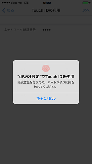

- dアカウントを設定する
-
- ■dアカウントの設定
-
-
【1】dアカウント設定アプリを起動し、「設定をはじめる」をタップします。（初回起動の場合は、本画面の前に利用許諾画面が表示されます。）
-
【2】「dアカウントを設定」をタップします。
-
【3】端末に設定するdアカウントのIDとパスワードを入力し、「次へ」をタップします。
-
【4】2段階認証を「利用する」に設定している方は、セキュリティコードを入力し「次へ」をタップします。
※2段階認証を「利用しない」方は、この画面は表示されません。

-
【5】完了した旨のメッセージが表示されたら完了です。
「完了」をタップします。
-
- ■Touch IDの利用
-
対応端末の場合、引き続きTouch IDの利用の設定できます。
-
【6】「Touch IDを利用する」をタップします。
-
【7】dアカウントがドコモの回線契約者のみ表示されます。ネットワーク暗証番号を入力し「次へ」をタップします。

-
【8】Touch IDに登録している指でホームボタンに触れます。
 -
【9】Touch IDを設定した旨のメッセージが表示されたら完了です。「完了」をタップします。

-